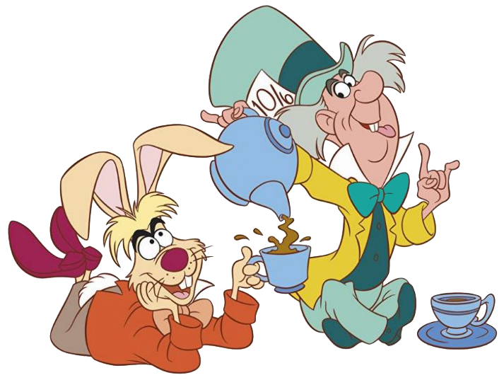

Tortas Locas del maravilloso Sombrerero
¡Bienvenidos al maravilloso mundo del Sombrerero Loco Dulces! Nos complace enormemente darles la bienvenida a nuestra página web, un rincón mágico donde la fantasía se mezcla con el delicioso arte de la repostería.
Imagina un lugar donde las tortas y dulces no solo son exquisitos, sino también diseñados para satisfacer todas las preferencias y necesidades dietéticas. Aquí en Sombrerero Loco Dulces, nos enorgullece ofrecer una amplia gama de opciones que incluyen dietas veganas, opciones para diabéticos, y productos libres de gluten, entre otras alternativas especializadas.
Cada dulce que creamos es un homenaje a la magia y la diversidad, asegurando que cada bocado sea una experiencia única y memorable.
Además, entendemos lo importante que es la comodidad y la accesibilidad, por lo que ofrecemos un servicio de envíos a domicilio. Así, podrán disfrutar de nuestras delicias desde la comodidad de su hogar, sin preocupaciones ni complicaciones.
¡Gracias por visitarnos y bienvenidos a Sombrerero Loco Dulces, donde cada día es una fiesta para el paladar!
